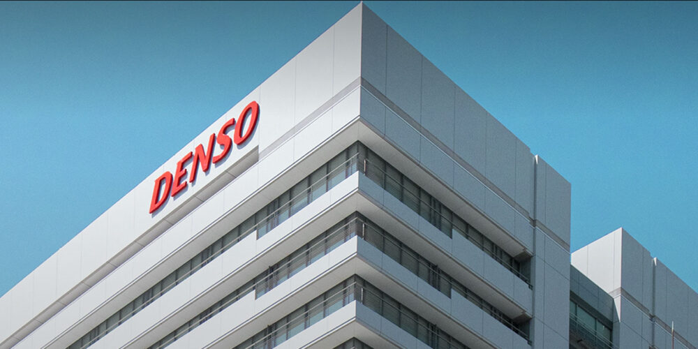
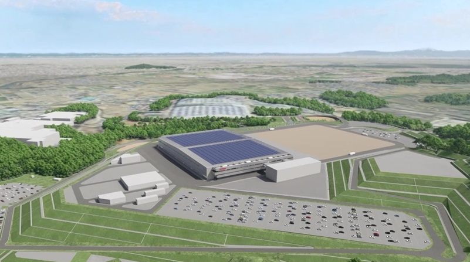

Une usine sans hommes : le pari technologique de Denso
De O.Abdelwahd · Publié le 13 juin 2025

Denso Corporation, l’entreprise japonaise, annonce l’extension de son site Zenmyo à Nishio City (préfecture d’Aichi), avec une nouvelle installation ultra-automatisée — et le mot est faible.
Basée à Kariya, Denso est une ancienne filiale de Toyota. L’entreprise emploie aujourd’hui plus de 160 000 personnes dans 35 pays et se classe comme le 2ᵉ fournisseur mondial de pièces automobiles : systèmes de motorisation, électronique, climatisation, capteurs, etc.
Son PDG, Shinnosuke Hayashi, pilote une transformation en profondeur de l’entreprise. Il a clairement exprimé son ambition : faire de Denso non plus seulement un fournisseur de composants, mais un acteur central de la mobilité intelligente, durable et connectée.
Le projet de Nishio : une vitrine technologique

Modélisation du futur site industriel de Denso. Source: Denso
C’est dans cette optique qu’en septembre 2024, Denso a annoncé la construction d’un site pilote ultra-moderne et automatisé au sein de son usine de Nishio. L’investissement est estimé à 450 millions d’euros pour une surface totale de 510 000 m², dont 56 000 m² de bâtiments industriels. L'entreprise prévoit une fin des travaux en janvier 2027 et une mise en service début 2028.
Avec ce projet, Denso souhaite répondre à plusieurs défis majeurs tels que la pénurie de main-d’œuvre dans l’industrie, la nécessité d’une production logicielle flexible et l’expérimentation de nouvelles formes de création de valeur via l'autonomisation, la digitalisation et l’autosuffisance énergétique.
Une usine totalement autonome
L’autonomie à 100 % repose sur une robotisation complète. L’objectif est un fonctionnement non-stop, 24h/24, sans opérateur humain sur site. Cette autonomie reposera sur plusieurs technologies clés : des ARM (robots autonomes mobiles) pour le transport de pièces et matériaux, des bras articulés, un visiocontôle par ordinateur avec IA intégrée pour l'assemblage, l'inspection et la logistique.
Le tout est surveillé en permanence via caméras et capteurs intelligents, capables de déclencher des diagnostics prédictifs pour assurer la maintenance préventive. En cas d’anomalie, les interventions se feront à distance, évitant ainsi l’arrêt des lignes de production. C’est une production sans aucune présence humaine. Pour atteindre un tel niveau d’autonomie, la conception de l’usine elle-même a dû être repensée en profondeur. Et c’est là qu’intervient l’un des piliers technologiques majeurs du projet : le digital twin, ou jumeau numérique, qui rend possible une gestion ultra-prévisionnelle et une adaptabilité constante de la production.
Flexibilité, digital twin et intelligence centralisée
Le cœur du système, c’est la flexibilité des lignes de production. Grâce à la standardisation des composants et des logiciels, une même ligne pourra produire plusieurs types de produits, sans reconfiguration lourde ni surcoût en machines.
Cela est rendu possible notamment grâce à l’utilisation du jumeau numérique : une simulation virtuelle de l’usine créée dès la phase de conception. Ce double numérique permet de tester, d’optimiser, et d’ajuster les processus avant toute intervention physique. Les données opérationnelles ainsi collectées sont centralisées et utilisées pour adapter rapidement les lignes à de nouveaux produits, sans ré-ingénierie majeure.
Un logiciel propriétaire orchestre l’ensemble : flux de production, logistique, contrôle qualité, maintenance… Tout est centralisé et automatisé, avec surveillance vidéo continue et programmation des interventions à distance, limitant au strict minimum les arrêts non planifiés.
Une vision écologique pour l'industrie
Denso entend faire de cette usine un modèle d’écologie industrielle. L’objectif n’est pas seulement de produire sans humains, mais aussi de produire sans carbone. L’installation fonctionnera grâce à un mix énergétique composé de panneaux solaires et d’hydrogène vert.
L’entreprise mise sur le recyclage interne de chaleur, la réduction des déchets à la source et une architecture pensée pour minimiser l’empreinte environnementale.
Ce projet s’inscrit dans la stratégie environnementale globale de Denso, qui vise une réduction de 50 % des émissions de CO₂ d’ici 2035, et une neutralité carbone totale en 2045. Une première version de ce système énergétique a déjà été testée en 2023 sur un projet pilote, et Denso compte désormais le généraliser sur tous ses sites.
L’usine est également conçue pour fonctionner sans papier et sans câblage physique, avec une gestion numérique intégrale des ordres, instructions et alertes, via un réseau sans fil industriel sécurisé.
Un modèle exportable à l’échelle mondiale
Denso ne construit pas simplement une usine, mais jette les bases d’un écosystème industriel complet intégrant hardware, logiciel, IA et énergie verte. Si ce concept fonctionne, il pourra être déployé dans les 200 usines du groupe et même exporté à d’autres secteurs : électronique, pharmacie, agroalimentaire...
Alors à voir si Denso réussira à faire de cette “smart factory” le modèle standard de l'usine de demain.